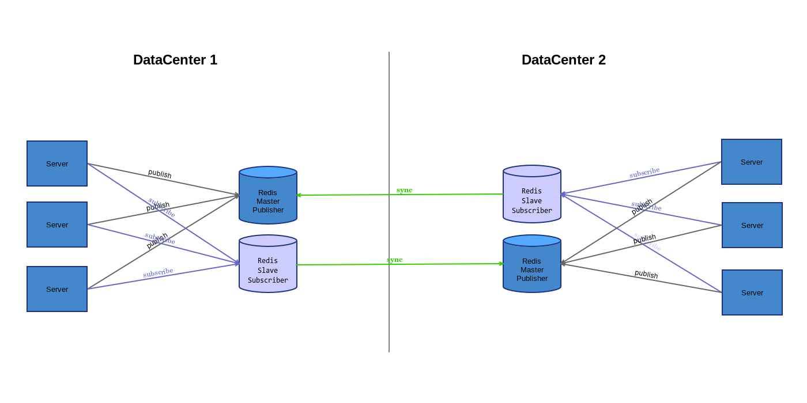

由于 Master 上 Publish 的消息会自动同步到所有 Slaves，Redis Pub/Sub 很容易扩展
Redis PubSub scales really easily since the Master/Slave replication automatically publishes to all slaves.
可以在 Master 上 Publish 消息，然后在 Slave 上 Subscribe 消息，反之不行
With replication in-place the publisher can publish in the master host and the subscribers can subscribe to the slave host.
It is important to mention that this relationship is one-way. Master –> Slave relationship are unidirectional. It is impossible to publish to the slave and subscribe to the master.
…
The conclusion is simple: Two ways pub/sub channels across servers require at least 4 Redis hosts.
引用自 Pub Sub Across Servers Using Redis | Manu Cohen-Yashar's Blog
需要注意的是，Slave 虽然不可写（Readonly），但是照样可以 Pub/Sub， 只是 Publish 的消息不会同步到 Master，所以不会被 Master 上的 Subscriber 接收到， 但是 Slave 自身的 Subscriber 仍工作正常。
多机房部署的情况下，2 个 Redis 实例可实现双向通讯
但是比较低效，Master 所在机房 Publish 的消息会在机房间传输一次（Sync 一次）， Slave 所在机房 Publish 的消息会在机房间传输两次（Send、Sync 各一次）， 而且 Slave 机房部署的应用需要跨机房直接连接到 Master 才能进行 Publish。
多机房部署的情况下，4 个 Redis 实例可以实现高效的双向通讯
 每一次 Publish 的消息会在机房间传输一次，机房间只有 Master/Slave 同步流量。
Pub/Sub 跨机房部署带来的问题
从 Slave Subscribe 消息后，消息 Publish 一方无法获知 Subscriber 数量
1: # Publish to master, subscribe from master. 2: $ redis-cli -h master.local subscribe test & 3: [1] 20590 4: $ Reading messages... (press Ctrl-C to quit) 5: 1) "subscribe" 6: 2) "test" 7: 3) (integer) 1 8: $ 9: $ redis-cli -h master.local publish test "hello from master" 10: 1) "message" 11: 2) "test" 12: 3) "hello from master" 13: (integer) 1 14: $ fg 15: redis-cli subscribe test 16: C-c C-c 17: $ 18: # Publish to master, subscribe from slave. 19: $ redis-cli -h slave.local -p 6380 subscribe test & 20: [1] 20592 21: $ Reading messages... (press Ctrl-C to quit) 22: 1) "subscribe" 23: 2) "test" 24: 3) (integer) 1 25: $ 26: $ redis-cli -h master.local publish test "hello from master" 27: (integer) 0 28: 1) "message" 29: 2) "test" 30: 3) "hello from master" 31: $